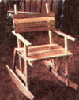
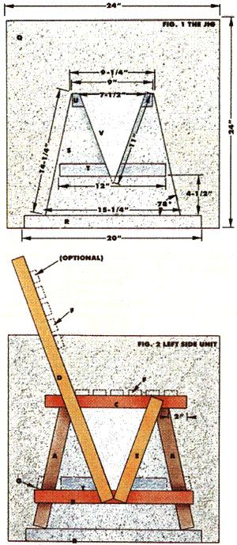

From Mother No. 90
If you thought only seasoned woodworkers build furniture, think again.
The chair is a common piece of furniture, yet it's probably one of the most difficult home furnishings to make. Why? Because these usually delicate-appearing seats must be built to withstand the stress of people leaning back on the rear legs, and often rely upon some complicated joinery techniques.
However, I'm not an accomplished woodworker, and I've come up with an alternative design that even a novice should be able to cobble together fairly quickly, using nothing more than a hammer, a saw, some nails, a punch, and a bottle of glue. It incorporates simple joinery-lap joints-and the structural strength of a truss framework to make a truly durable chair. My dining set has withstood five years of abuse from adults and children alike. As for aesthetics . . . well, you decide. I think the design looks great, particularly when you consider the price: zero, in my case (because I used salvaged wood) . . . or anywhere from about $2.50 per chair (for medium-quality spruce) to around $8.00 (for clear-grade hardwood) if you buy the lumber from a mill or retail supplier.
I call my creation the truss-worthy chair . . . and if you've got a few moments, I'll tell you how to build one.
First, you'll need to make a jig: a guide that will help you position the components accurately to assure that all of your chairs will be identical in design. To build one, just round up some scrap plywood and a few pieces of 1 X 2 lumber (the actual measurements will be 3/4" X 1-1/2"). Now, keeping an eye on Fig.1, proceed as follows:
Use an approximately 24"-square piece of plywood-almost any thickness will do-for the jig's base (part Q in the diagram). Nail a 20" 1 X 2 (part R) flush with, and centered along, one edge of the base. That'll be the jig's bottom edge. Then cut a piece of 3/4" plywood to form a trapezoid (part S) measuring 9-1/4" at its top, 15-1/4" at its bottom, and 14-1/4" on each side. The sides should each form a 78° angle to the base of the jig's bottom edge (make sure that both angles are identical).
Now nail the trapezoid in place so that its bottom is flush against, and centered along, part R. Nail a 12" 1 X 2 (part T) parallel to, and 4-1/2" above, the trapezoid's base. Then affix a 9" 1 X 2 (part U) across, and flush with, the top of the trapezoid.
Finally, cut a triangle of 3/4" plywood (part V) to measure 7-1/2" at its base and 11" on each side. Then saw the point straight off, about 1-1/4" from the tip, so that the resulting snub-nosed isosceles can be nailed flush-upside down-with cross members T and U as shown in Fig. 1. There . . . your jig is now complete.
A: Four 15-1/2" legs
B: Two 18" bottom rails
C: Two 16" top rails
D: Two 30" back rails
E: Two 12-5/8" front supports
F: Ten 15" seat and back slats
G: Two (one front, one back) 15" bottom braces
To save you the trouble of planning, I've done it for you. If you're purchasing dimensional lumber, one 8' piece will cover parts A and C; another 8' board will make parts B and D; a 6' length will supply parts E, G, and one slat from F; and a 12' plank can be cut to yield the nine remaining F slats.
Basically, the chair consists of two side frames (which you make, one at a time, on the jig) connected by seat slats, back slats, and two cross braces.
Begin by constructing the left side frame, using Fig, 2 as a guide. Lay your jig flat on a worktable, and place a leg piece (A) against each of the trapezoid's angling sides so that the ends of each leg butt against the jig's bottom board (R). Now position the bottom rail (B) lengthwise against the bottom edge of the jig's crosspiece (T), and mark where the rail overlaps the legs (each of its ends should extend equally from the outside edge of each leg). Then set the rail aside for a moment, squeeze enough glue (yellow carpenter's or any resin adhesive) onto the marked areas to cover them thoroughly, and put the bottom rail back into place. Finally, while holding one leg and the rail firmly in position with one hand, drive two 1-1/4" 3d finishing nails or wire brads into the joint. Do the same with the opposite leg. With hardwoods, it's best to dip the fasteners in paraffin to keep the wood from splitting.
Next, position, glue, and nail the top rail (C) into place as shown in Fig. 2, making certain that piece is pushed firmly against the jig's top cross member (U). As you can see from the illustration, the top rail's right, or forward, end should extend 2" in front of the front leg. (NOTE: When you build the right side frame, position the top rail the other way around-with the left end extending 2" outward from what will be its front leg.)
Now you're ready to install the left side frame's final two members. Place the long back rail (D) flush along the left side of the jig's triangle, positioning the corner of D's bottom end flush with the lower edge of the bottom rail (B). The top end of the back rail will then extend across, and well beyond, the joint you just made at the rear leg and top rail. Glue and nail the component in place, using two 2" finishing nails at the top joint and a couple of 1-1/4" brads at the bottom.
With that done, position a front support piece (E) along the right side of your jig's triangle, with the outside corner of the part's bottom end flush with the lower edge of B, and the inside corner of its top end flush with the top rail's upper edge. If the support's been cut a bit long, make sure the excess is toward the bottom, where it won't interfere with the slats. Now glue and nail the front support in place, again using a pair of 2" finishing nails at the top and two 1 1/4" brads at the bottom.
Remove the completed side frame, put it on a solid work surface, and center-punch all the nails to draw each joint up tightly and to sink the heads below the wood's surface. Nowset the frame aside for at least 24 hours to allow the glue to dry. Don't skip this required step! If you do, you'll loosen each glue joint when you hammer the slats and braces in place, and your chair won't last more than a week.
Naturally, once you've assembled the left side frame and stashed it away to dry, you'll be ready to whip together the right side of the chair. Remember, though, to reverse the position of the back rail and the front support. The longer D piece should be to the right of the triangle, and the support (E) to the left.
To finish your chair, just position the seat slats 1/2" apart across the side frames, mark where the slats overlap the top rails (each end should extend outward by 3/4" or so), apply glue to the contact areas, and hammer the slats in place, using a pair of 2" finishing nails at every joint.
You'll need some patience when you attempt to attach the first few slats, as you'll have a hard time keeping the side frames upright and aligned while you hold the slat in place . . . but you'll be OK as soon as the first couple of slats are nailed down and the chair gains some rigidity. Make a point to check each slat with a try square to make sure it's perpendicular to the frames.
Next, go to work on the back crosspieces. Position the first slat with its lower edge 5" above the seat, and space the remaining three pieces 1/2" apart. The ends should extend 1-1/2" beyond each back rail.
Before you flop your carcass onto your newly built handiwork, glue and nail the front and back bottom braces (G) in position, as shown in Fig.2. Place each one so that its lower edge is pretty much even with the top edge of the bottom rails (B). Set all the newly sunk nails, give the whole thing another 24 hours to dry, and then you and your chair will be ready to meet seat to seat.
I didn't apply any finish to my rustic set of yellow-poplar dining chairs because the lumber came from the floor of a centuryold house, complete with gouges and nail holes, and I liked the look. The functional simplicity of the furniture seems to call for a natural treatment, so I just sanded the pieces slightly and left them unadorned. If a conventional softwood were used, I'd suggest a finish made of a medium-dark stain blended with a bit of boiled linseed oil, to give some color to the "fresh" wood.
My wife and I liked our quick-and-easy chairs so much that we decided to make living room furniture in the same pattern. Our walnut rocker required that we make only a few modifications to the original design, and I suspect that even further variations on the theme (making a larger chair on a larger jig, for instance) are possible . . . and waiting to be discovered by some imaginative soul. Could that person be you?
|
 By extending the front legs, adding arms, and nailing on a pair of rockers, anyone can turn the standard chair into a comfortable and functional rocking model. |
 The chair itself is made entirely of 1 X 2s: you'll need about 34 linear feet in all, cut to the lengths indicated. (The components are keyed to Fig. 2.) |
|